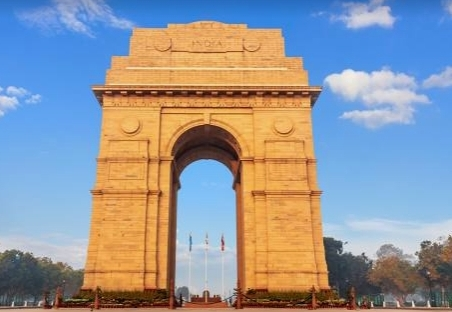
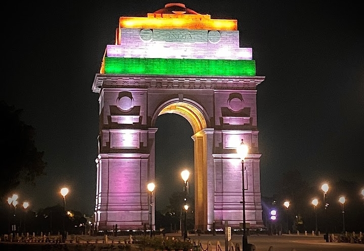

The India Gate is a war memorial located near the Kartavya pathon the eastern edge of the "ceremonial axis" of New Delhi, formerly called Rajpath in New Delhi. It stands as a memorial to 74,187 soldiers of the Indian Army who died between 1914 and 1921 in the First World War, in France, Flanders, Mesopotamia, Persia, East Africa, Gallipoli and elsewhere in the Near and the Far East, and the Third Anglo-Afghan War. 13,300 servicemen's names, including some soldiers and officers from the United Kingdom, are inscribed on the gate.Designed by Sir Edwin Lutyens, the gate evokes the architectural style of the ancient Roman triumphal arches such as the Arch of Constantine in Rome, and later memorial arches; it is often compared to the Arc de Triomphe in Paris, and the Gateway of India in Mumbai.
 Following the Bangladesh Liberation war in 1972, a structure consisting of a black marble plinth with a reversed rifle, capped by a war helmet and bounded by four eternal flames, was built beneath the archway. This structure, called Amar Jawan Jyoti (Flame of the Immortal Soldier), has since 1971 served as India's tomb of the unknown soldier. India Gate is counted amongst the largest war memorials in India and every Republic Day, the Prime Minister visits the Gate to pay their tributes to the Amar Jawan Jyoti, following which the Republic Day parade starts. India Gate is often a location for civil society protests, and is popular with tourists.
| Established | 10 February 1921 |
| Unveiled | 12 February 1931 |
| Designed by | Sir Edwin Lutyens |
The India Gate was part of the work of the Imperial War Graves Commission (IWGC), which came into existence in December 1917 under the British rule for building war graves and memorials to soldiers who were killed in the First World War. The foundation stone of the Gate, then called the All India War Memorial, was laid on 10 February 1921, at 16:30 hrs, by the visiting Duke of Connaught in a ceremony attended by officers and men of the Imperial Indian Army, Imperial Service Troops, the Commander-in-Chief, and Lord Chelmsford, the Viceroy. On the occasion, the Viceroy is reported to have said, "The stirring tales of individual heroism, will live forever in the annals of this country", and that the memorial which was a tribute to the memory of heroes, "known and unknown", would inspire future generations to endure hardships with similar fortitude and "no less valor". The Duke also read out a message from the King, which said, "On this spot, in the central vista of the Capital of India, there will stand a Memorial Archway, designed to keep", in the thoughts of future generations, "the glorious sacrifice of the officers and men of the Indian Army who fought and fell". During the ceremony, the Deccan Horse, 3rd Sappers and Miners, 6th Jat Light Infantry, 34th Sikh Pioneers, 39th Garhwal Rifles, 59th Scinde Rifles, 117th Mahrattas, and 5th Gurkha Rifles. The land was owned by contractor Sir Sobha Singh who helped construct large tracts of New Delhi and was the primary contractor.